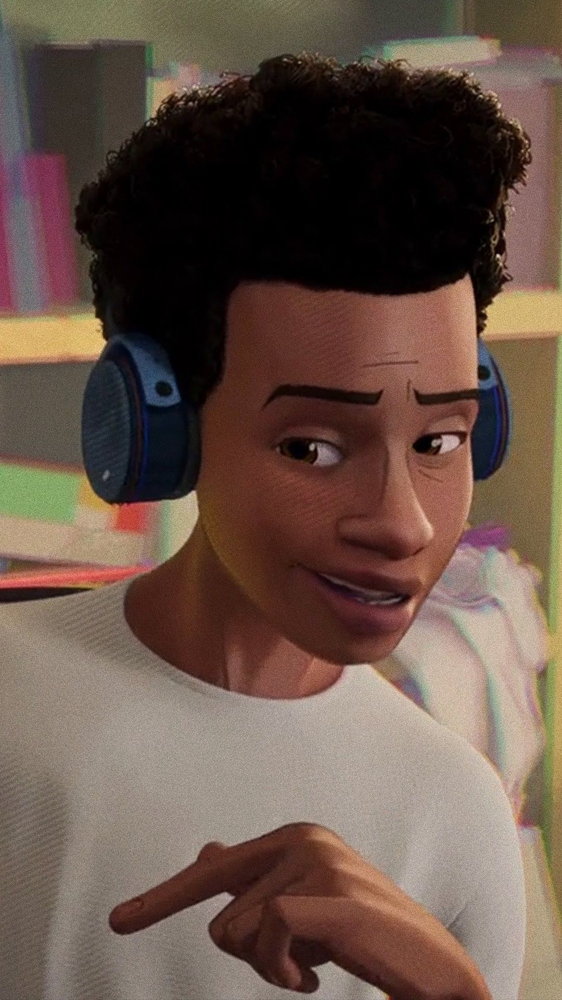
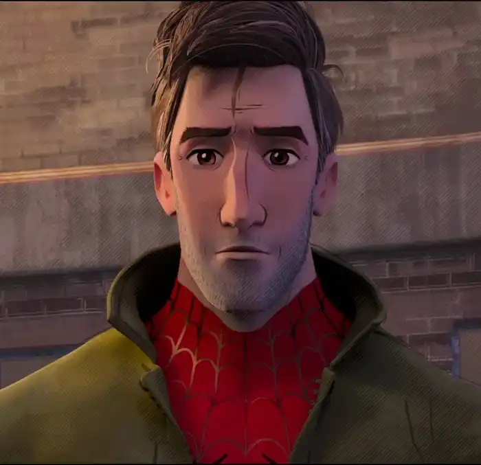
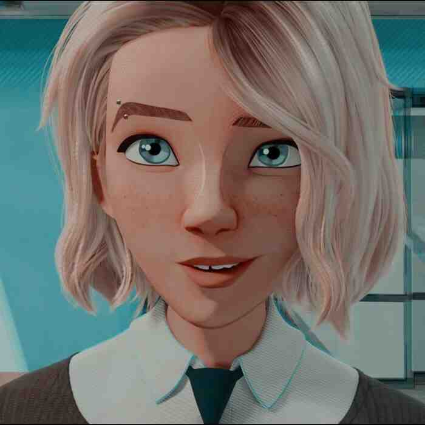
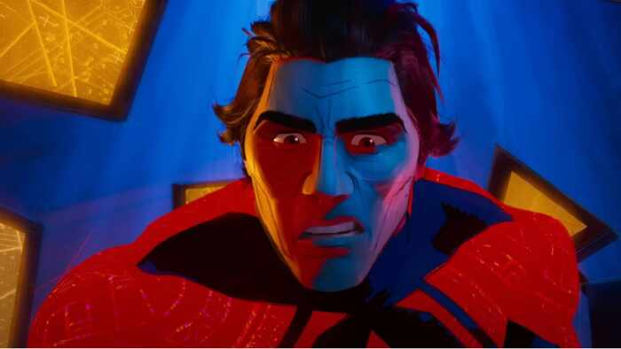
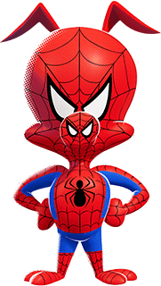
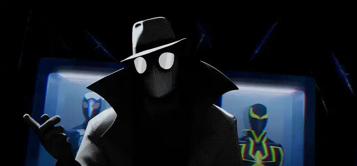
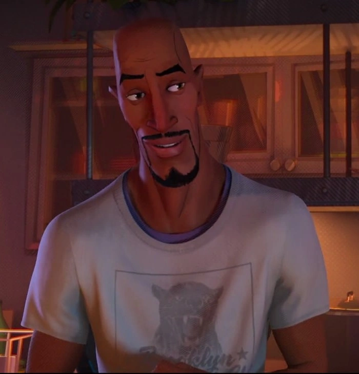
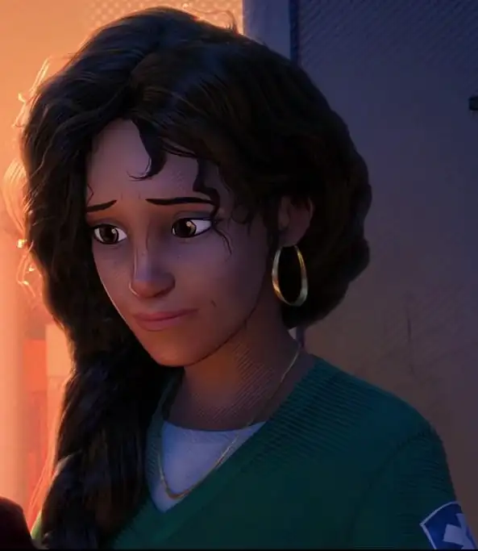
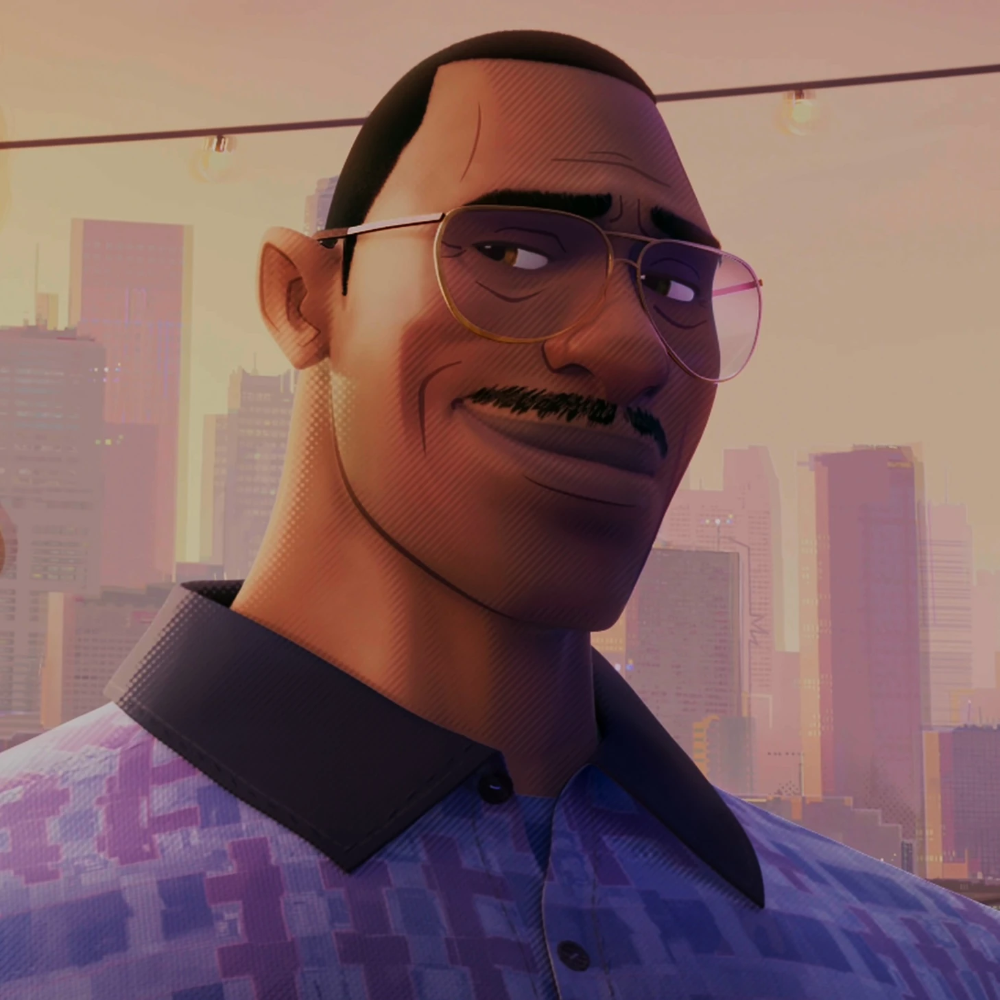
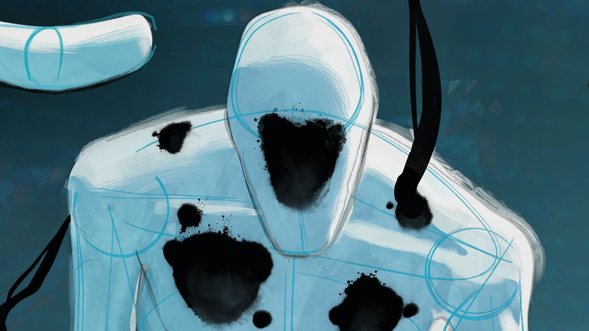

Miles Morales
El protagonista de la saga, un adolescente que se convierte en el nuevo Spider-Man después de ser mordido por un arácnido genéticamente modificado.
Los rostros-y mascaras- que dan forma a la historia de Miles a traves de las dimensiones.

El protagonista de la saga, un adolescente que se convierte en el nuevo Spider-Man después de ser mordido por un arácnido genéticamente modificado.

Un Spider-Man experimentado de otra dimensión que se convierte en mentor de Miles Morales.

Una heroína de otra dimensión que lucha junto a Miles y Peter para salvar el multiverso.

El principal antagonista de la saga, un poderoso criminal que busca manipular el multiverso para sus propios fines.

Un Spider-Man del futuro que ayuda a Miles(o eso cree) y sus amigos a enfrentar las amenazas del multiverso.

Un Spider-Man pero con una pequeña curiosidad.... Es un puerco.

Un Spider-Man de una dimensión alternativa con un estilo más oscuro y gótico.

Aaron Davis es su tío, quien secretamente trabaja para el villano principal bajo la identidad del Merodeador..

Rio Morales es la madre de Miles Morales. De ascendencia puertorriqueña, es su principal pilar emocional y brújula moral.

Jefferson Davis es el padre de Miles Morales. Un hombre de buena voluntad que trabaja para proteger a su familia y comunidad.

The Spot es un ex cientifico de Alchemax capaz de crear portales interdimensionales con su propio cuerpo. Subestimado al principio, pero con un poder que crece sin control.